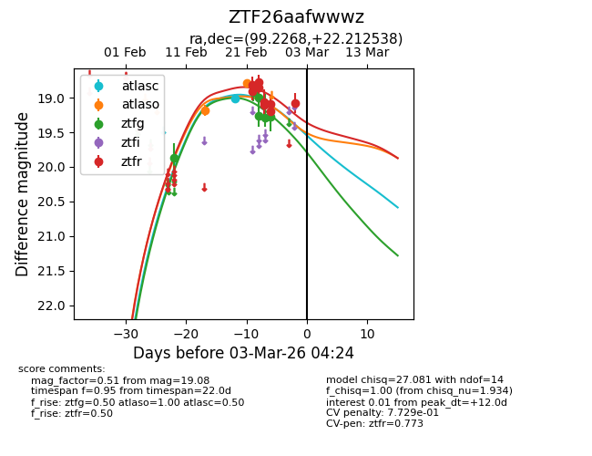
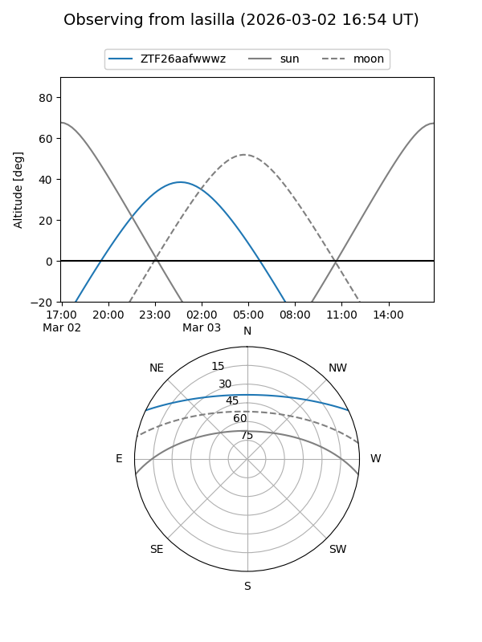
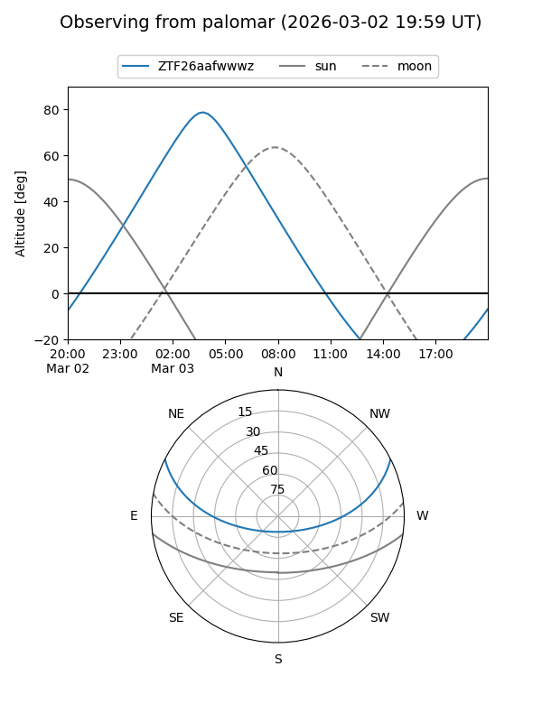
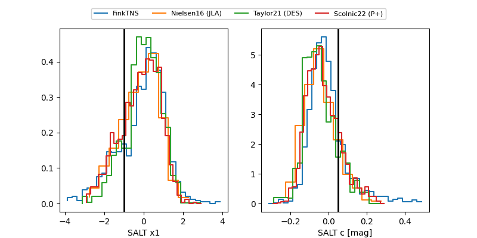

ZTF26aafwwwz
Target ZTF26aafwwwz at 2026-03-03 04:25
Aliases and brokers:
FINK: link
Lasair: link
ALeRCE: link
alt names
ZTF26aafwwwz (ztf,fink_ztf)
Coordinates:
equatorial (ra, dec) = 99.2268,+22.21254
equatorial (HMS+DMS) = 06:36:54.42,+22:12:45.14
galactic (l, b) = (191.4719,+6.90230)
Flags:
likely cv
Photometry:
last atlasc=19.01, atlaso=18.79, ztfg=19.28, ztfr=19.08
1 atlasc, 2 atlaso, 7 ztfg, 9 ztfr detections
Lightcurve

Visibility


Additional plots
